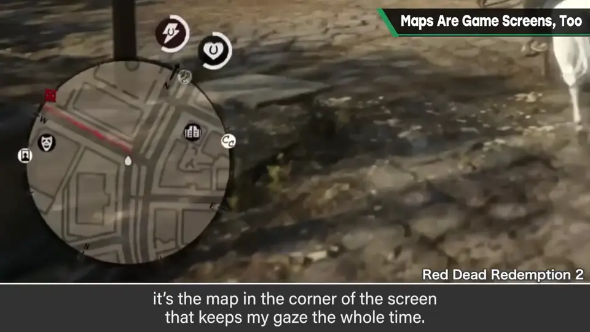
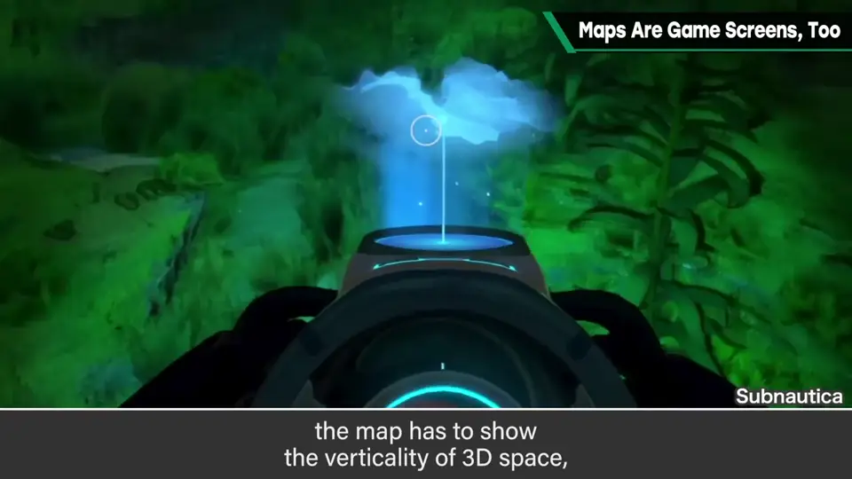
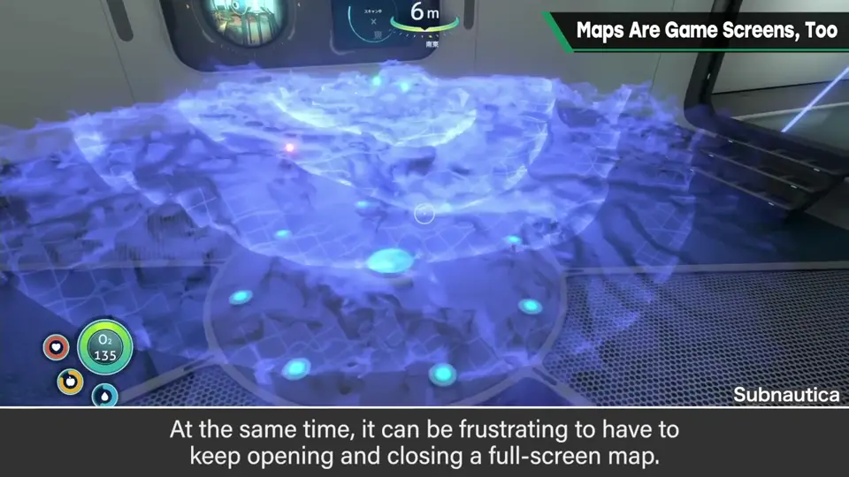
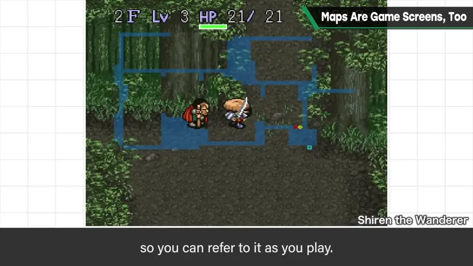
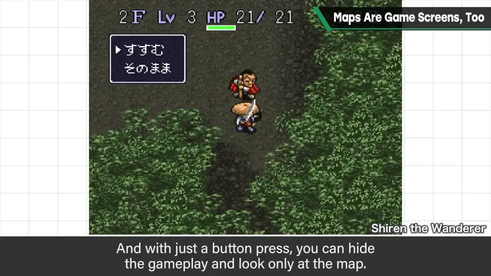
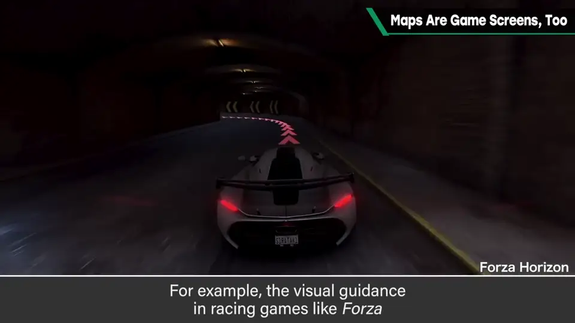
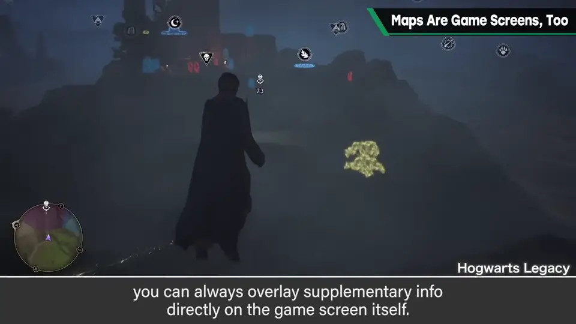

速览
玩各种游戏时，樱井常觉得「实际上是在地图画面里玩游戏」：明明在 3D 空间里走，画面角落显示着小地图，眼睛却一直只盯那里。画面这么广阔、风景画得这么美，实际却在角落里玩，总觉得有点可惜。平地俯视还好，立体空间很难表达：像《深海迷航》那样还要表现立体起伏，一张地图很难把握；但频繁切到全屏地图也很烦——这虽是最常见的手法，却不能在这里放弃思考。谈到地图画面处理，樱井印象深刻的是《不可思议的迷宫》系列：在整个画面上半透明地叠一层地图，可以边看边玩；按下按钮，游戏画面消失，只看地图。并非所有类型都能用，但当时很划时代。不只是充实地图本身，增加主画面的信息量也很有效：比如《极限竞速 地平线》的引导标识，即使完全不看地图，也大致知道弯道有多急。此外在游戏画面上叠加各种信息补充也可以；通过地形的布置和描绘让转弯处、可疑的地方更容易看出来也有关。思考玩家看着画面哪里在玩，相当重要；把握玩家的意识更重要。
1. 盯着小地图在玩 0:03
玩各种游戏时，樱井常常觉得「实质上是在地图画面里玩游戏」：明明在 3D 空间里走，画面角落显示小地图，眼睛却总盯着那里。

游戏画面如此广阔、风景描绘得如此出色，实际上却在画面一角玩游戏——总觉得有点可惜。
2. 立体空间的难题 0:34
如果是平地俯视还好，立体空间就很难表达。像《深海迷航》（Subnautica）那样还必须表现立体起伏的地图，非常难把握。


话虽如此，频繁切换到全屏地图也很麻烦。这是最常见的方法，但——
3. 《不可思议的迷宫》的做法 1:00
说到地图画面处理，樱井印象深刻的是《不可思议的迷宫》系列：在整个画面上半透明地显示地图，可以边看边玩；按下按钮，游戏画面就消失，只看地图。


不是所有类型都能用，但在当时是划时代的。
4. 增加主画面的信息量 1:24
不只是想着把地图做得更充实，增加主画面本身的信息量也很有效。
例如《极限竞速 地平线》等赛车游戏的引导标识：即使完全没看地图，也大致能理解弯道有多急。


即便不是这样，在游戏画面上叠加各种信息加以补充也可以；用地形的布置与描绘让转弯处、可疑的地方更容易看出来，也与此相关。
自测题
1. 樱井觉得一直盯着小地图玩有什么问题？
画面广阔、风景精美，却在角落玩游戏，很可惜；立体空间也难用小地图表达。 0:03
2. 《不可思议的迷宫》系列的地图有何特点？
在整个画面半透明叠加地图，可边看边玩；按按钮可只看地图。 1:00
3. 除了充实地图，还有什么办法？
增加主画面信息量：如赛车游戏的引导标识、叠加信息、用地形布置引导。 1:24